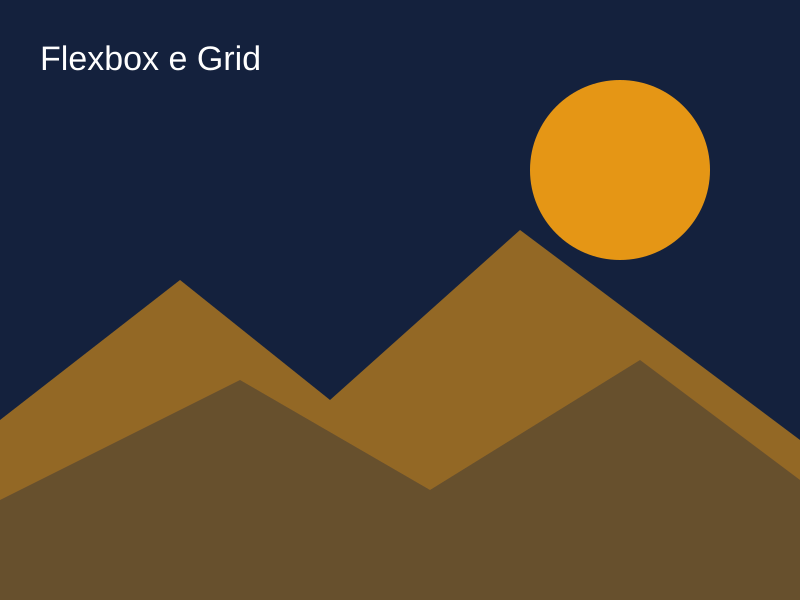

Flexbox ou Grid: qual usar?
Publicado em 5 de novembro de 2026 · Tema: CSS e layout

Dois jeitos modernos de montar layouts em CSS são o Flexbox e o Grid. Eles se completam, e saber quando usar cada um deixa o código mais simples.
Flexbox: layout em uma direção
Ideal para alinhar itens em uma linha ou coluna, como um menu de navegação.
.menu {
display: flex;
gap: 1rem;
justify-content: space-between;
}Grid: layout em linhas e colunas
Ideal para controlar as duas direções ao mesmo tempo, como uma galeria de fotos.
.galeria {
display: grid;
grid-template-columns: repeat(4, 1fr);
gap: 1rem;
}Como escolher
- Precisa alinhar itens em uma única linha ou coluna? Use Flexbox.
- Precisa de linhas e colunas ao mesmo tempo? Use Grid.
- Pode combinar os dois: Grid para a página e Flexbox dentro dos componentes.